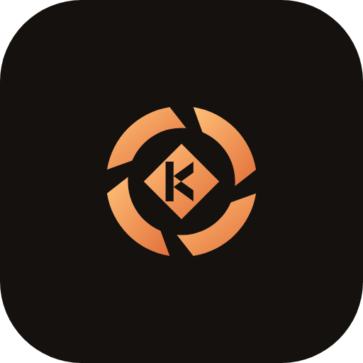
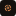

形态语义：四段弧叶 = 四条主张（订阅套利 / 随身性 / 本土化 / 私有与便携）；中心菱形 = 内核（kernel / runtime）；
内核上刻一道 K 形负槽 = 品牌字母（可发现，但不主导读感）。
配色：墨黑 + 琥珀橙 —— 刻意避开 2023 年后 AI 产品的「蓝→紫→品红」通用渐变。
几何真源：delivery/brand/khy-brand-geometry.js，本图与全部产物由
node scripts/brand/build-brand-assets.js 生成。


██ █
█████ ███
███ ███
██ █ ██
██ ███ ██
█ ███ ██
█ ██ ███ █
██ █ ███
██ ███ ██
██ █ ██
███ ███
███ █████
█ ██ #FFC078图形渐变亮端#F0A868暗底上的文本安全值（对 #14110E 9.41:1）#E2703A图形主色 / 渐变暗端#C2551F浅底上的 UI 强调（对白底 4.55:1）#9C4116浅底上的文本安全值（对白底 6.60:1）#14110E品牌底板 / 负形#F6F2EC纸底| 端 | accent（亮） | accent（暗） | 说明 |
|---|---|---|---|
| Web | #9C4116 | #F0A868 | --khy-primary |
| 桌面端 | #9C4116 | #F0A868 | --color-brand |
| 移动端 | — | #F0A868 | AppColors.primary（深空底） |
| TUI | — | #F0A868 | ccTheme brand |
| khyquant | #1890ff（保持金融蓝） | 独立项目，红色/绿色另有 A 股涨跌语义 | |
禁止不要把主标改成蓝紫品红渐变 —— 那是 AI 行业的通用色，一屏之下全是同一个模子。
禁止不要给主标加描边、投影或外发光；它在 16px 下必须仍然读得出「四段环 + 中心核」。
禁止不要把 K 槽单独拿出来当字标用 —— 它是负形的一部分，脱离内核就不再是这枚标记。
禁止不要在纸底上直接用 amber-300/400（对比度 1.4–2.0，不达文字门槛）。
必须品牌块底色统一用墨黑 #14110E；主标在墨底与纸底都用同一枚琥珀渐变。
必须≥48px 用完整几何（含 K 槽）；≤32px 用紧凑几何（实心内核、无 K 槽）。